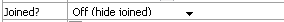
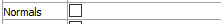
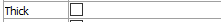
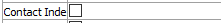
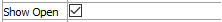

Joint
Description
Show joint information by label or value. The first few attributes of this plot item are contingent on the first attribute (Color By).
Attributes
Color By

Set either a “label” or a “contour” to be colored on the plot item.
Label/Value

Specify which label or value (as determined by the previous setting) to display in the plot item. The options for both are shown on the following table. Some options will require additional, dynamically-provided attributes in order to complete the selection; these are indicated with notations on the table.
Table 1: Selection Options for Label/Value Label Value Constitutive Aperture Contact Extraᵉ Closure Contact Groupˢ Contact Extraᵉ Direction Factor Of Safety Fracture Flow Rate Joint Set Flow Velocity Joint Type MAperture Material Normal Displacement Model Normal Force Open Normal Stress Propertyᵖ Pressure State Separation Uniform Shear Displacement Shear Force Shear Stress Stress-Ratio
Key: ᵉAn “Extra” attribute follows ᵖA “Property” attribute follows ˢA “Slot” attribute follows
Line

Select line type, color and thickness for joint traces.
Color-List/Contour
The attribute appearing in this position is either a Color-List or a Contour, depending on the “Color By” selection. Refer to the standard color-list control description and the standard contour control description for details.
Scale

Size the plot item.
Scale: Automatically (checked) scale the plot item. The Target field specifies the target scaling (as a percentage of screen size). If unchecked, the edit field may be used to manually scale the item.
Joined
Select whether to display joints that are joined.
Normals
Selecting normals will display lines indicating the contact normal vectors.
Thick
Selecting this will plot the joint traces in a line thickness proportional to the selected value.
Contact_index
Selecting this will display the contact index numbers on the plot. This may be very slow for models with a large number of contacts.
Show Open
Selecting this will limit the plor to only display joints that have contact with zero normal forces.
| Was this helpful? ... | UDEC © 2018, Itasca | Updated: Mar 15, 2024 |